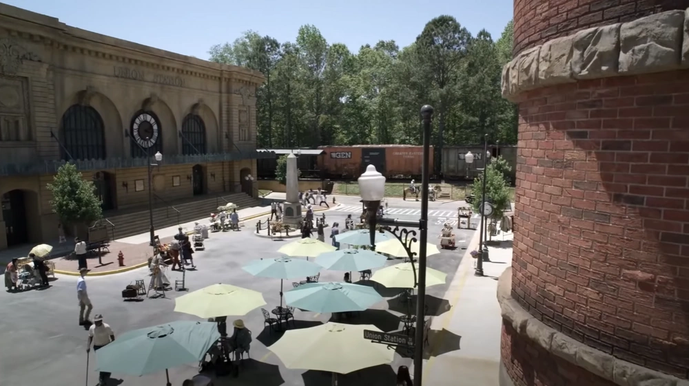

La Mancomunidad es un refugio con una civilización compuesta por numerosas comunidades unidas en el este y medio oeste de los Estados Unidos con más de 50.000 habitantes, siendo su líder la Gobernadora Pamela Milton.